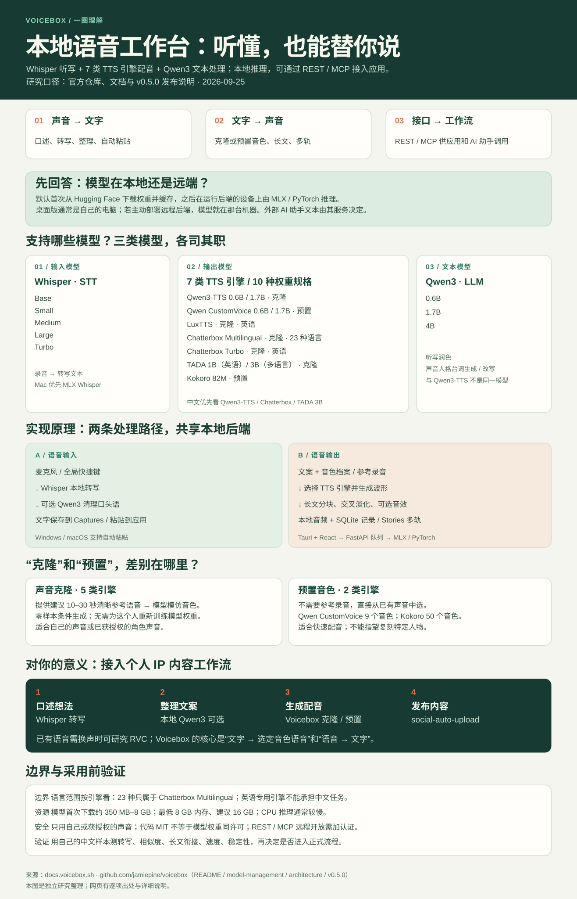

把说的话，
落进输入框。
全局快捷键录音，用 Whisper 转写；可选本地 Qwen3 模型整理口头语。macOS 和 Windows 支持将结果粘贴回原先聚焦的应用。录音和文本也会存入 Captures。[2]
麦克风 → Whisper → 文字
LOCAL-FIRST AI VOICE STUDIO
本地运行，让语音变文字，也让文案变声音。Whisper 负责听写；7 类 TTS 引擎支持克隆和预置配音；Qwen3 可整理文本。模型首次下载后在运行后端的设备上推理，REST / MCP 可接入其他应用。
依据官方仓库、文档与发布说明整理 · 核对于 2026.09.25
录音 → Whisper 识别 → 文本
文案 → 参考或预置音色 → 音频
03 / 本地模型
首次启用时从 Hugging Face 下载并缓存；推理在运行 Voicebox 后端的设备上完成。[9]
Base、Small、Medium、Large、Turbo 五种规格，用于录音转写。Apple Silicon 优先 MLX Whisper，其他平台使用 PyTorch 路径。[9]
Qwen3-TTS 0.6B / 1.7B；Qwen CustomVoice 0.6B / 1.7B；LuxTTS；Chatterbox Multilingual；Chatterbox Turbo；TADA 1B（英语）/ 3B（多语言）；Kokoro 82M。见下方语言与音色能力表。[9]
0.6B、1.7B、4B 本地语言模型，用于听写润色与声音人格的台词生成或改写。它和 Qwen3-TTS 是不同用途的模型。[14]
“引擎”指能力类别，“规格”指该引擎可选的模型权重。下载体积、显存和效果随规格变化；例如 Qwen3-TTS 有 0.6B 与 1.7B 两档，TADA 有英语 1B 与多语言 3B 两档。无需一次下载所有模型。[9]
04 / 引擎范围
不同引擎的语言、克隆方式和表现力各不相同。[7]
显示 7 个引擎
| 引擎 | 音色方式 | 语言范围 | 主要特点 |
|---|---|---|---|
| Qwen3-TTS 0.6B / 1.7B | 克隆 | 10 种，含中文 | 中文与多语言音色克隆 |
| Qwen CustomVoice 0.6B / 1.7B | 预置 | 10 种，含中文 | 9 个音色；自然语言发声指令 |
| LuxTTS | 克隆 | 英语 | 轻量、CPU 友好 |
| Chatterbox Multilingual | 克隆 | 23 种，含中文 | 覆盖更多语言 |
| Chatterbox Turbo | 克隆 | 英语 | 较快；支持 [laugh] 等标签 |
| TADA 1B / 3B | 克隆 | 1B 英语；3B 10 种含中文 | 较长篇幅的连续语音 |
| Kokoro 82M | 预置 | 多语言，含中文 | 50 个音色、低资源占用 |
注意“23 种语言”是 Chatterbox Multilingual 的覆盖范围；Kokoro 与 Qwen CustomVoice 是预置音色引擎，不从参考录音克隆。Qwen 克隆路径不会执行 CustomVoice 的自然语言发声指令。[7][4]
05 / 实现原理
预训练模型负责识别与合成；Voicebox 负责选择模型、调度任务、处理音频和保存结果。
快捷键或应用内麦克风获取音频。
Whisper 在本机转写录音。
可选 Qwen3 清理文本，再保存或粘贴。
读取预置音色，或从参考录音构造音色提示。
TTS 引擎按文案生成波形；长文按句分块。
拼接、可选音效处理，保存音频与记录。
“零样本克隆”用预训练模型和参考语音构造生成条件，无需为每个新音色重新训练权重；“预置音色”直接选已有声音，无需参考录音。桌面层为 Tauri + React，本地 FastAPI 后端统一调度模型任务，MLX / PyTorch 执行推理，并以本地音频文件和 SQLite 保存结果。[8][9]
06 / 完整引导图
从能力、模型、两条处理路径，到使用场景和验证步骤。点击图片可单独放大查看。

07 / 使用场景
点选目标，查看对应能力组合。
08 / 能力边界
这些条件决定 Voicebox 是否适合你的设备和任务。
人格功能能生成或改写台词，但 Voicebox 本身不是通用问答助手。复杂回答由外部 AI 助手或你的应用提供。
结果受录音质量、语言和引擎影响。“23 种语言”不适用于所有引擎；英语专用模型不承担中文任务。[3]
Windows、macOS 有安装包；Linux 可从源码或 Docker 使用。最低 8 GB 内存、5 GB 空间；建议 16 GB 以上。首次模型下载约 350 MB–8 GB，CPU 可用但通常较慢。[10]
实时增量转写、端到端语音对话、文本描述设计新音色和移动端伴侣仍列在路线图中。Linux 的全局听写自动粘贴尚未实现。[11]
10 / 来源与方法
优先使用项目仓库、官方文档、发布说明与源码。
本页是独立研究整理，与 Voicebox 项目无隶属关系。项目持续变化，实际功能以安装版本和设备测试为准。内容核对日期：2026 年 9 月 25 日。